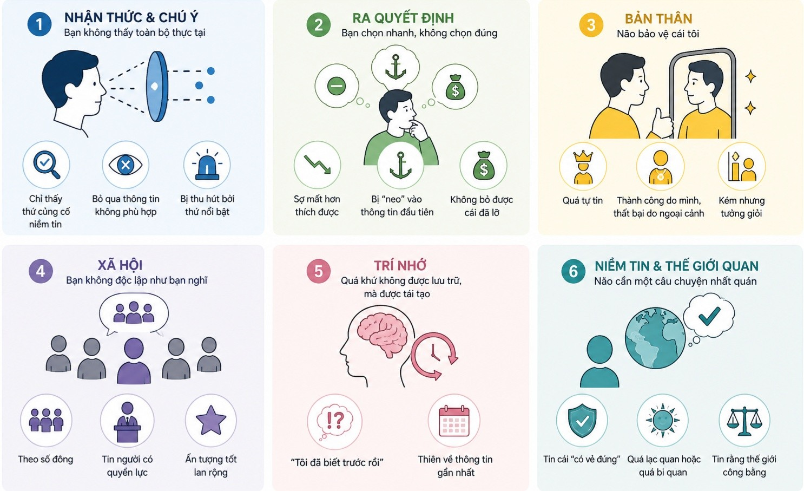

Thiên kiến nhân sinh

Chúng không phải là lỗi ngẫu nhiên, mà là “shortcut” của não để xử lý thông tin nhanh — nhưng thường dẫn đến sai lầm.
Não không được thiết kế để tìm ra sự thật tuyệt đối.
Nó là một hệ thống tối ưu hóa đồng thời nhiều mục tiêu (multi-objective optimization), dưới các ràng buộc sinh học:
◦ Giảm tiêu thụ năng lượng (energy efficiency)
◦ Dự đoán nhanh môi trường (predictive processing)
◦ Giữ hệ niềm tin nhất quán (cognitive coherence)
◦ Tồn tại trong môi trường xã hội (social survival)
→ Vì phải tối ưu đồng thời các mục tiêu này, não buộc phải:
lọc – nén – đơn giản hóa – và đôi khi bóp méo thông tin
Các “thiên kiến nhận thức” (cognitive biases) chính là side-effects của quá trình tối ưu đó.
1. Thiên kiến nhận thức & chú ý (perception & attention)
(Bạn không thấy toàn bộ thực tại)
Cơ chế: attention có giới hạn + não dự đoán trước
◦ Confirmation bias: chỉ thấy thứ củng cố niềm tin
◦ Selective perception: bỏ qua dữ liệu không phù hợp
◦ Salience bias: bị hút bởi thứ nổi bật
→ Bạn không nhìn sai. Bạn nhìn thiếu.
2. Thiên kiến ra quyết định (decision-making)
(Bạn chọn nhanh, không chọn đúng)
Cơ chế: heuristics để tiết kiệm năng lượng
◦ Loss aversion: sợ mất hơn thích được
◦ Anchoring: bị “neo” vào thông tin đầu tiên
◦ Sunk cost fallacy: không bỏ được cái đã lỡ
→ Quyết định có vẻ hợp lý, nhưng sai về dài hạn.
3. Thiên kiến về bản thân (self-related biases)
(Não bảo vệ cái tôi)
Cơ chế: giữ ổn định tâm lý & hình ảnh bản thân
◦ Overconfidence: quá tự tin
◦ Self-serving bias: thành công do mình, thất bại do ngoại cảnh
◦ Dunning–Kruger: kém nhưng tưởng giỏi
→ Khó học từ sai lầm.
4. Thiên kiến xã hội (social biases)
(Bạn không độc lập như bạn nghĩ)
Cơ chế: tối ưu để “thuộc về nhóm”
◦ Bandwagon effect: theo số đông
◦ Authority bias: tin người có quyền lực
◦ Halo effect: ấn tượng tốt lan rộng
→ Bạn bị ảnh hưởng mà không nhận ra.
5. Thiên kiến trí nhớ (memory biases)
(Quá khứ không được lưu trữ, mà được tái tạo)
Cơ chế: memory reconstruction
◦ Hindsight bias: “tôi đã biết trước rồi”
◦ Recency bias: thiên về thông tin gần nhất
→ Bạn học từ một phiên bản quá khứ không chính xác.
6. Thiên kiến niềm tin & thế giới quan
(Não cần một câu chuyện nhất quán)
Cơ chế: cognitive coherence
◦ Belief bias: tin cái “có vẻ đúng”
◦ Optimism / pessimism bias
◦ Just-world hypothesis
→ Niềm tin trở nên cứng và khó thay đổi.
Vòng lặp tạo ra “thực tại cá nhân”
1. → Bạn có niềm tin ban đầu
2. → Bạn chỉ nhìn thấy dữ liệu phù hợp
3. → Bạn ra quyết định dựa trên dữ liệu lệch
4. → Bạn hành động
5. → Bạn nhận kết quả
6. → Bạn nghĩ: “tôi đã biết trước”
→ Niềm tin được củng cố, dù đúng hay sai
Kết luận
Niềm tin không trực tiếp thay đổi thực tại.
Nhưng nó định hình:
◦ Cách bạn nhìn
◦ Cách bạn quyết định
◦ Cách bạn hành động
→ Và cuối cùng, kết quả bạn nhận được
Não không tối ưu để đúng.
Nó tối ưu để nhanh, nhất quán, và đủ tốt để sống sót.
Ứng dụng ngắn gọn
◦ Khi thấy điều gì “rất hợp lý” → kiểm tra lại
◦ Khi quá tự tin → giả định mình đang sai
◦ Khi ra quyết định lớn → tách dữ liệu khỏi cảm xúc